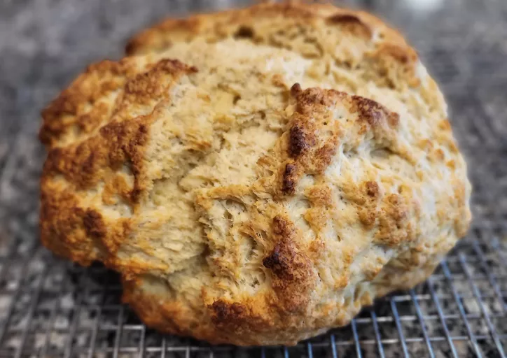

Irish soda bread

Description
Irish soda bread is a traditional quick bread made with simple ingredients
like flour, baking soda, salt, and buttermilk. It's easy to make and has a
hearty texture, perfect for serving alongside soups and stews.
Ingredients
- 4 cups all-purpose flour
- 1 teaspoon baking soda
- 1 teaspoon salt
- 1 and 3/4 cups buttermilk
Steps
-
Preheat your oven to 425°F (220°C). Lightly grease a baking sheet or
line it with parchment paper.
-
In a large mixing bowl, whisk together the all-purpose flour, baking
soda, and salt.
-
Make a well in the center of the dry ingredients and pour in the
buttermilk.
-
Using a wooden spoon or your hands, mix the buttermilk into the dry
ingredients until you have a soft dough.
-
Turn the dough out onto a lightly floured surface and knead it briefly,
just until it comes together.
-
Shape the dough into a round loaf and place it on the prepared baking
sheet.
-
Use a sharp knife to score a deep cross into the top of the loaf, then
bake in the preheated oven for 30-40 minutes, or until the bread is
golden brown and sounds hollow when tapped on the bottom.
-
Transfer the bread to a wire rack to cool completely before slicing and
serving.